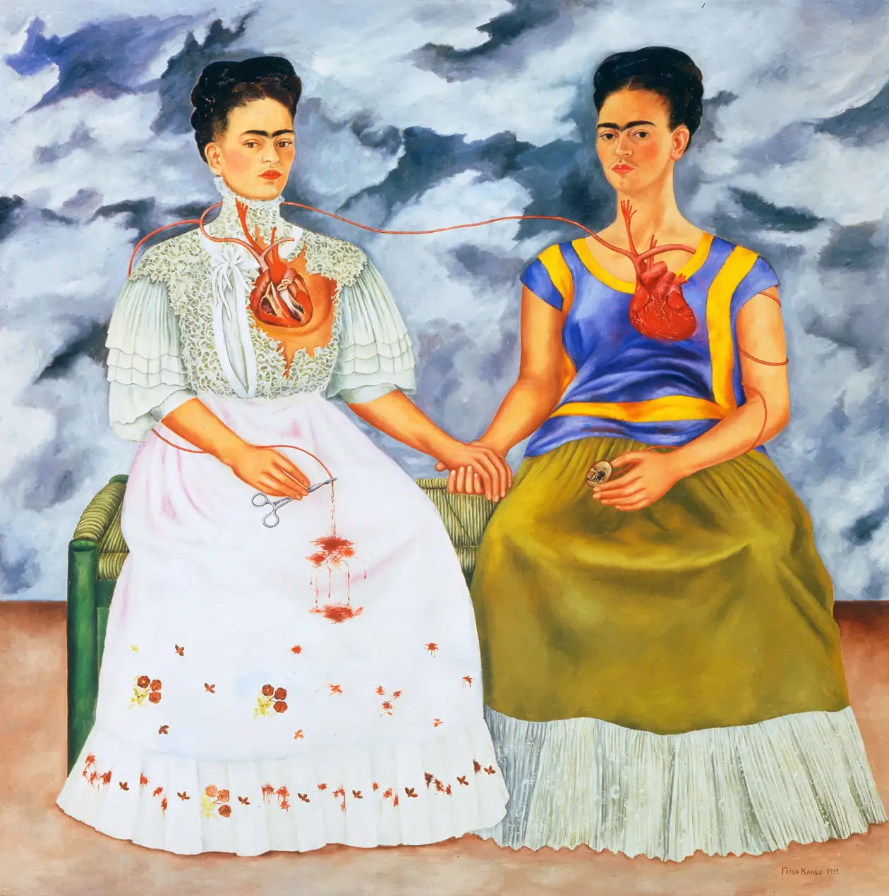
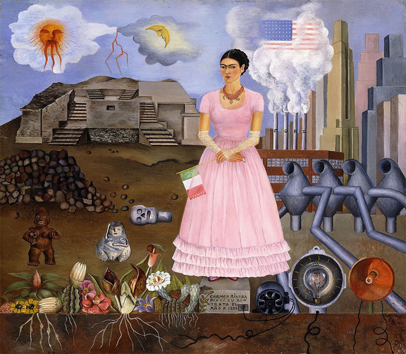
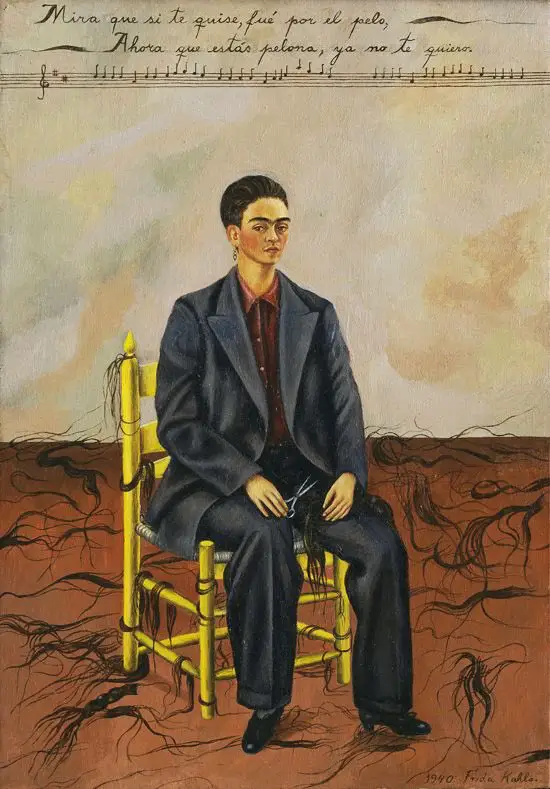
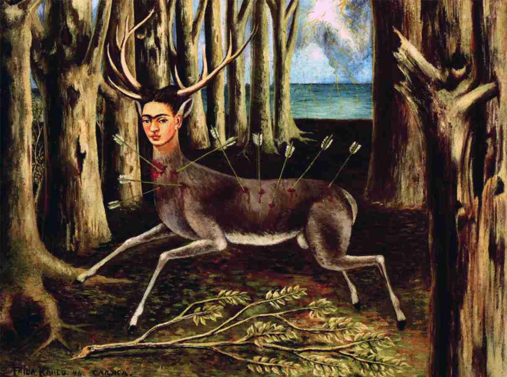
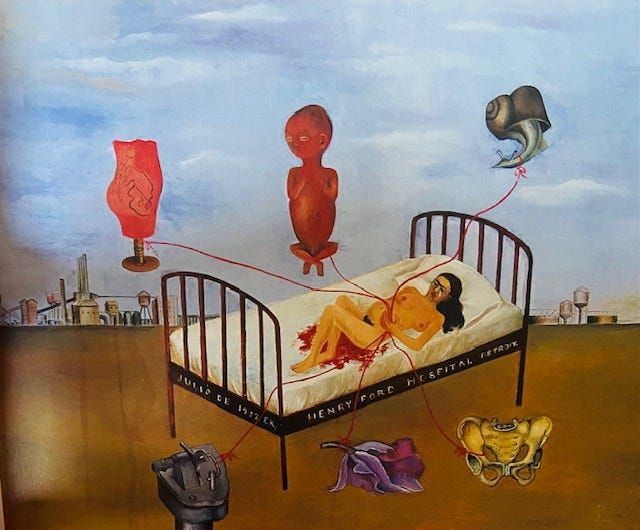
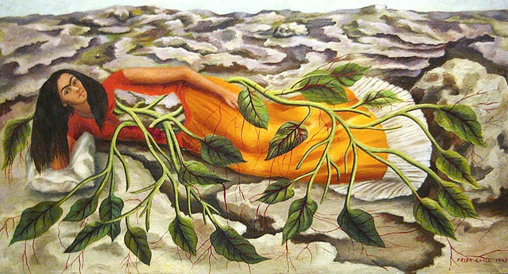

Frida Kahlo
Frida Kahlo, pittrice messicana del XX secolo, famosa per i suoi autoritratti intensi e provocatori. La sua arte esplora il dolore fisico e emotivo, riflettendo le sue esperienze personali, tra cui la malattia e il dolore. Kahlo è diventata un'icona femminista e un simbolo della forza attraverso la sua resilienza e il suo stile distintivo, caratterizzato da colori vivaci e dettagli simbolici.
      Torna alla home page